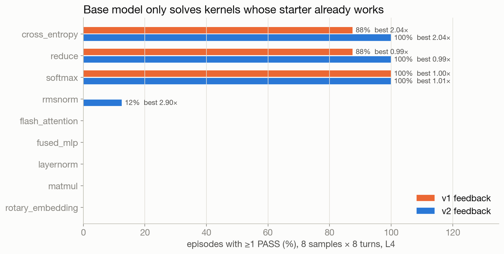
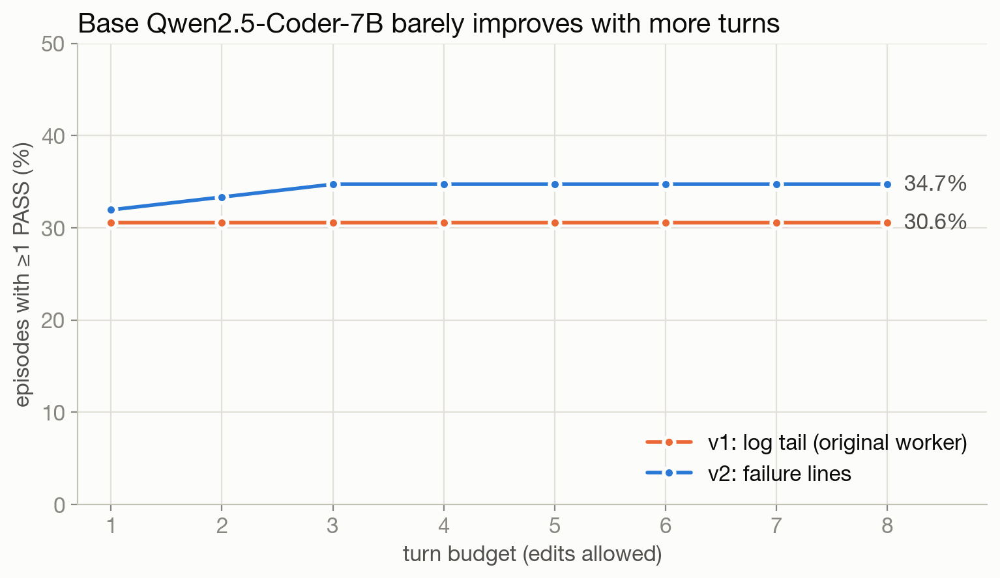
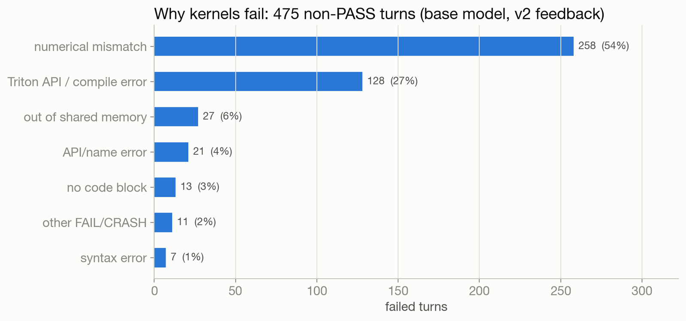
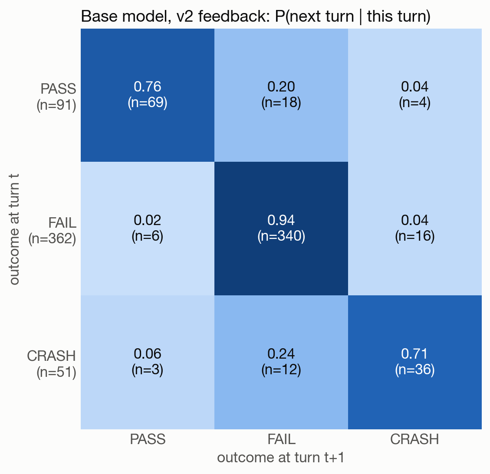
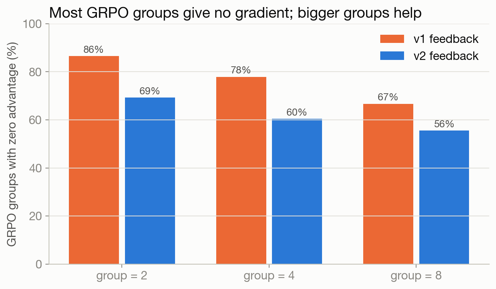
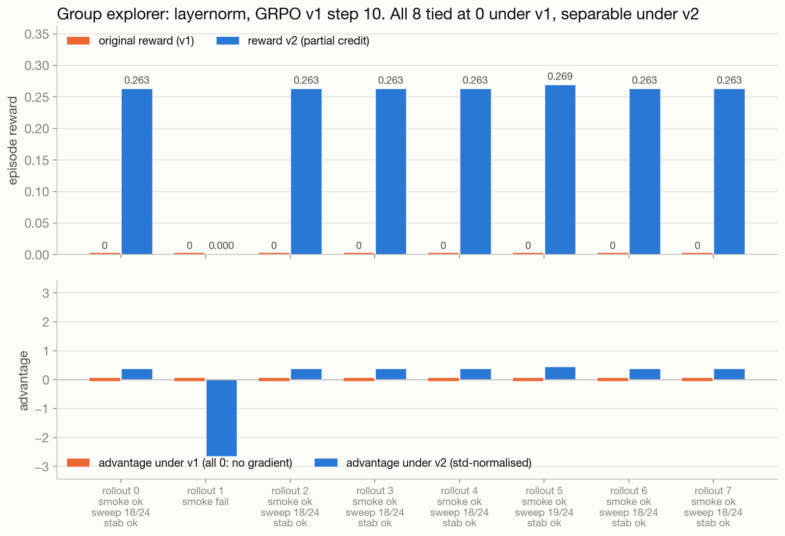
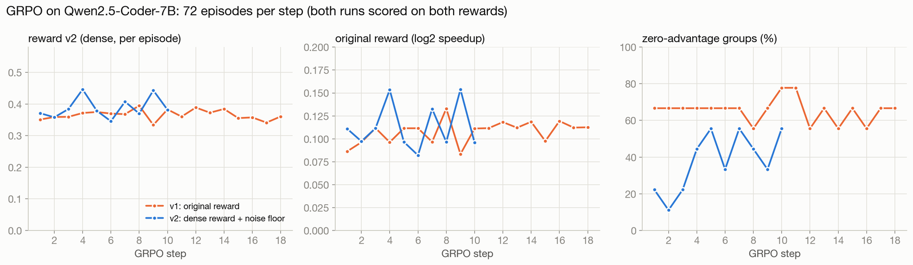
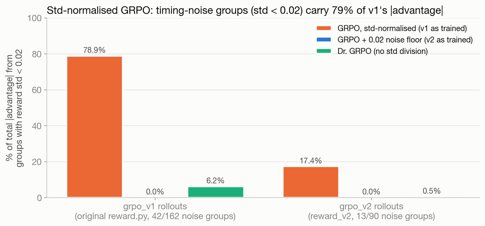
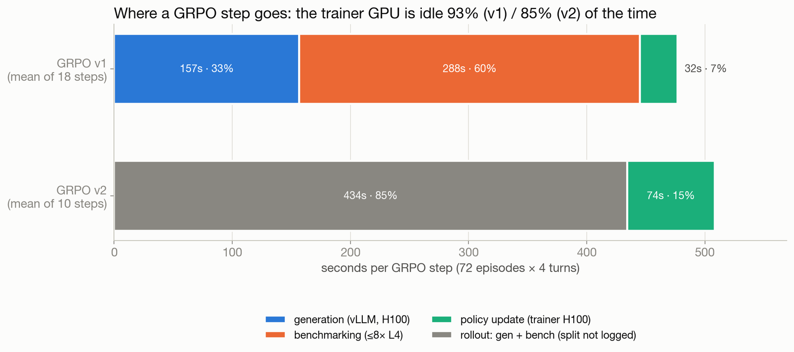

RL results: GRPO stalled, and the reasons are measurable
Thesis. Multi-turn GRPO on Qwen2.5-Coder-7B-Instruct did not teach the model to write new kernels. It did not fail because RL "doesn't work". It failed for specific, measurable reasons: most groups gave no gradient, the gradient that did exist was mostly timing noise, the model is far more likely to break a working kernel than to fix a broken one, and most of the wall clock went to benchmarking. Each section below covers one of these findings, with the number that supports it.
Setup: 9 AutoKernel kernel types, full 5-stage bench.py on L4, reward = log2(best speedup) if any turn passes, else 0. All numbers come from results/numbers.json and results/extra_numbers.json; figures come from presentation/. Every run is a single seed.
1. The untrained model barely uses its extra turns
Over 9 kernels × 8 samples × 8 turns, the base model produces at least one PASS in 34.7% of episodes, with a mean reward of 0.1327. Extra turns add very little. Pass@turn goes from 31.9% on the first turn to 34.7% after eight. 61.1% of turns resubmit code already tried in the same task, mostly the starter kernel.
Passes come only from kernels whose starter already works. cross_entropy, reduce and softmax pass in every episode. rmsnorm passes in 12.5% of episodes. The remaining kernels never pass.
| kernel | pass rate | best speedup | mean reward |
|---|---|---|---|
| cross_entropy | 100% | 2.040× | 1.027 |
| softmax | 100% | 1.007× | -0.004 |
| reduce | 100% | 0.987× | -0.020 |
| rmsnorm | 12.5% | 2.900× reward hack | 0.192 |
| flash_attention, fused_mlp, layernorm, matmul, rotary_embedding | 0% | n/a | 0.000 |
The rmsnorm "speedup" comes from switching the accumulation from fp32 to fp16. A later re-measurement showed this is a reward hack, not a real optimisation; see Verifier. Also note that a correct kernel slower than PyTorch scores below zero, which ranks it under a crash. That is why softmax and reduce, which pass every time, have negative mean reward.

2. Better feedback was a free win, with no training
The original design sent the model the tail of bench.py's log. That tail is only the summary block, so the model never saw which check had failed. Sending the actual failure lines instead (feedback v2) changed the base model's results with no training at all:
| v1: log tail | v2: failure lines | |
|---|---|---|
| episode pass rate | 30.6% | 34.7% |
| mean reward | 0.0966 | 0.1327 |
| pass@turn, turn 1 → turn 8 | 30.6% → 30.6% (flat) | 31.9% → 34.7% |
| reward with a 1-turn vs 8-turn budget | 0.0965 vs 0.0966 | 0.0967 vs 0.1327 |
| CRASH turns | 128 | 56 |
Under the log-tail feedback, later turns were worth nothing: the 8-turn reward equals the 1-turn reward. With the failure lines, the model has something it can act on. This is the cheapest improvement in the whole project, and it came from reading the harness, not from RL.

3. Correctness is the bottleneck, not speed
With the log tail, 256 failed turns had no reason we could classify ("other FAIL/CRASH"). With the failure lines, the reasons become visible. The largest category is 258 numerical mismatches, followed by 128 Triton API / compile errors, 27 out-of-shared-memory errors and 21 API/name errors. The model mostly fails by producing wrong answers or calling Triton APIs that don't exist. It almost never fails by being slow.

4. The model breaks working kernels
A turn-to-turn transition matrix over all 504 transitions shows the multi-turn loop working against the model. After a PASS, the next turn is broken (FAIL or CRASH) with probability 24%, or 35% under log-tail feedback. After a FAIL, the next turn passes with probability only 1.7%. Even the PASS→PASS transitions are partly the model resubmitting the same code: 40.6% of them are byte-identical.
So the model is far more likely to break a working kernel than to fix a broken one. Pass@turn is flat because repairs are rare, not because the model stops trying.

5. Most groups carry no gradient, at any group size
GRPO learns only from groups whose rewards differ. Replaying base-model rollouts at different group sizes shows that the share of all-equal (zero-advantage) groups is 69.3% at group size 2, 60.4% at 4 and 55.6% at 8. Training therefore used group size 8. Even so, more than half of every batch teaches nothing, because a kernel that never passes yields eight zeros.

A dense reward can split these ties. In one GRPO v1 group (step 10, layernorm), all eight samples scored 0 under the original reward. Under reward v2, which gives partial credit for passing the smoke test, the shape sweep and the stability checks, the same eight samples have a reward std of 0.087. Across v1 training, an average of 3.44 of the 9 groups per step were tied under the original reward but separable under v2.

6. GRPO v1 stalled; v2 added gradient but solved nothing new
Both runs used group size 8, 4 turns, LoRA r=64 and learning rate 0.00001, with 72 episodes per step. Rewards were measured on L4.
| v1: original reward | v2: dense correctness credit | |
|---|---|---|
| steps | 18 | 10 |
| original reward | 0.0981 → 0.1147 | 0.1066 → 0.1154 |
| reward v2 | 0.3567 → 0.3534 | 0.3713 → 0.3985 |
| pass rate | 29.2% → 25.0% | 31.5% → 31.9% |
| zero-gradient groups (mean) | 65.4% | 37.8% |
| kernels ever passed | cross_entropy, reduce, rmsnorm, softmax | cross_entropy, reduce, rmsnorm, softmax |
| trainer wall clock / est. H100 cost | 2.38 h / $18.84 | 1.41 h / $11.15 |
v1 nudged the original reward up, but the gain came mostly from reduce producing fewer badly slow passing kernels (per-kernel reward -0.12 → -0.005) and from cross_entropy (0.9 → 1.028), while the pass rate fell. flash_attention, fused_mlp, layernorm, matmul and rotary_embedding never passed in any episode of any step.
v2 gives partial credit for correctness progress, gives every PASS a floor above any failure (so a correct but slow kernel no longer ranks below a crash), and ignores groups with std below 0.02. The robust effect is structural: zero-gradient groups dropped from about two thirds to about two fifths, and the pass rate stopped declining. The reward changes are small and come from a single seed, and no new kernel was solved.

7. Std-normalisation turned timing noise into most of v1's gradient
Among the v1 groups that did vary, many varied only because of benchmark timing noise. A typical case is a group of correct softmax kernels that all run at essentially PyTorch speed, with rewards that differ only in the third decimal. Standard GRPO divides by the group std, which scales this jitter up to full-size advantages. Replaying v1's logged rewards (matching the logged advantages exactly) gives:
| advantage estimator (GRPO v1 rollouts) | share of total |advantage| from timing-noise groups |
|---|---|
| GRPO, (r − mean) / std, as trained | 78.9% |
| Dr. GRPO, r − mean (no std division) | 6.2% |
Of v1's 162 groups, 106 had zero variance. The noise-level groups came from softmax (18), reduce (17) and cross_entropy (7), which are exactly the kernels the model already solves. So most of the update that v1 did make pushed the policy around on bench jitter for kernels it could already write. v2's std floor removes these groups by construction. Without the floor they would have carried 17.4% of v2's |advantage|.

8. Where the time goes: benchmarking, not learning
v1 logged per-turn timings, so a training step can be broken down: benchmarking took 60.5%, generation 32.8% and the policy update 6.7%. A mean step was about 445 s of rollout against 32 s of training, so the trainer H100 sat idle 93.3% of the time. Bench time per turn ranged from 9 to 242 s, and the slowest bench gates each synchronous turn.
The loop is bench-bound. Asynchronous rollouts and a cheaper first-pass verifier would buy more steps than any change to the optimiser.

9. KernelBench before and after: 0 to 0, on a harness we later replaced
As a held-out check, we ran a 28-problem KernelBench Level 1 subset (3 turns, H100). The base model's pass rate was 0%. After GRPO v2 it was 0%, on 28 problems. Training on 9 AutoKernel kernels did not transfer.
This result is superseded. The old KernelBench harness was itself broken: it never seeded weight initialisation (every conv problem failed even for an identical model), it timed CPU input generation, and only about half of Level 1 was valid. The fixed harness runs all 100 Level 1 problems. On it, the base model's Triton pass rate is still 0%, and the SFT model reaches 20%. The GRPO checkpoint was not re-run on the fixed harness. See Verifier for the harness fixes and SFT for the new numbers. Read "0 → 0" as "no transfer measured on a harness that could not have shown much", not as the final word.
Verdict
- GRPO did not make the model a better kernel writer. Over 18 + 10 steps the set of solved kernels did not change, and the reward moves are within single-seed noise.
- The signal, not the optimiser, was the problem. Most groups were all-zero, and most of the remaining gradient was timing noise amplified by std normalisation. Dense correctness credit and a noise floor fixed the plumbing (zero-gradient groups 65% → 38%), but they can't create successes the policy never samples.
- The cheapest win was outside RL. Sending the model the real failure lines raised mean reward from 0.0966 to 0.1327 with no gradient step.
- What comes next. The base policy has to produce correct kernels before RL has anything to sharpen. That is why the project moved to a fixed verifier and supervised fine-tuning first, with GRPO to be resumed once mixed-outcome groups are common (SFT).